Research Communities
Sen Cui
Assistant Researcher, Tsinghua
BAAI Young Scholar
Office: FIT Building, Room 3-120
Email: cuis@mail.tsinghua.edu.cn
🎓 Recruiting: Looking for postdocs, research assistants, interns, undergraduates, and collaborators to join our research on world models, embodied intelligence, and physical RSI systems. Welcome to reach out!
About
I am an Assistant Researcher and Shuimu Scholar at Tsinghua University, and a world-model BAAI Scholar. My research studies physical AI — building machines that perceive, reason about, and evolve in the physical world — through world models. I received my Ph.D. from Tsinghua's Department of Automation in 2024, advised by Prof. Changshui Zhang, and my undergraduate degree from Tsinghua University in 2019, where I worked with Prof. Quanshui Zheng.
Experience
BAAI Young Scholar, Beijing Academy of Artificial Intelligence, 2025 – present.

Assistant Researcher, Shuimu Scholar, Tsinghua University, 2024 – present, advised by Prof. Changshui Zhang.
Visiting Scientist, RIKEN AIP, 2023, advised by Prof. Masashi Sugiyama.
Ph.D., Department of Automation, Tsinghua University, 2019 – 2024, advised by Prof. Changshui Zhang.

Visiting Scholar, Department of Mechanical Engineering, University of California, Berkeley, 2018 – 2019, advised by Prof. Masayoshi Tomizuka.
B.E., Tsien Excellence in Education Program (Qian class), Tsinghua University, 2015 – 2019, advised by Prof. Quanshui Zheng.
News
- 2026-08 Our work ConfAL-WM: Confidence-Guided Active Learning for Action-Conditioned World Models is now available on arXiv.
- 2026-08 Our work MOSH-WM: Mask-Grounded Soft-Hamiltonian Dynamics for Object-Centric World Models is now available on arXiv.
- 2026-08 Our work TRCA: Transition-wise Rubric Credit Assignment for Long-horizon LLM Agents is now available on arXiv.
- 2026-08 Our work VERDI: Retrieval Is Not Transfer for Continual World Model Optimization is now available on arXiv.
- 2026-07 Our work ElasticTTT: Prior-Preserving Test-Time Tuning for Video Editing is now available on arXiv.
- 2026-07 Our team at BAAI released Orca: The World is in Your Mind, a multimodal representation world model.
- 2026-07 Our work EvoWorld: Evolving Panoramic World Generation with Explicit 3D Memory has been accepted by ECCV 2026.
- 2026-06 Our work Gold Points Sniper: Self-guided Visual Reasoning in VLM for Fine-grained Action Understanding has been accepted by ICRA 2026.
- 2026-06 Our work Deliberate Evolution: Agentic Reasoning for Sample-Efficient Symbolic Regression with LLMs has been accepted by ICML 2026.
- 2026-06 Our work MetaForge: A Self-Evolving Multimodal Agent that Retrieves, Adapts, and Forges Tools On Demand is now available on arXiv.
- 2026-05 Our work ECG-WM: A Physiology-Informed ECG World Model for Clinical Intervention Simulation is now available on arXiv.
- 2026-05 Our work Physically Native World Models: A Hamiltonian Perspective on Generative World Modeling is now available on arXiv.
- 2026-04 Our work CoDoL: Conditional Domain Prompt Learning for Out-of-Distribution Generalization has been accepted by TMLR 2026.
- 2026-02 Our work Scene2Demo: Self-Evolving Embodied Data Generation via Object-Action Graph is now available on arXiv.
- 2026-01 Our work Reversible Diffusion Decoding for Diffusion Language Models is now available on arXiv.
- 2025-12 Our work Beyond Similarity: Personalized Federated Recommendation with Composite Aggregation has been accepted by ACM TOIS.
- 2025-12 Honored to be selected as a BAAI Scholar.
- 2025-11 Our work From Coefficients to Directions: Rethinking Model Merging with Directional Alignment is now available on arXiv.
- 2025-11 Our work Merging without Forgetting: Continual Fusion of Task-Specific Models via Optimal Transport is now available on arXiv.
- 2025-11 Our work Think Consistently, Reason Efficiently: Energy-Based Calibration for Implicit Chain-of-Thought is now available on arXiv.
- 2025-09 Our work Decentralized Dynamic Cooperation of Personalized Models for Federated Continual Learning has been accepted by NeurIPS 2025.
- 2025-06 Our work CALM: Consensus-Aware Localized Merging for Multi-Task Learning has been accepted by ICML 2025.
- 2025-05 Our work Learning without Isolation: Pathway Protection for Continual Learning has been accepted by ICML 2025.
- 2025-05 Our work Adaptive Localization of Knowledge Negation for Continual LLM Unlearning has been accepted by ICML 2025.
- 2025-05 Our work Advancing Personalized Learning with Neural Collapse for Long-Tail Challenge has been accepted by ICML 2025.
- 2024-01 Our work CLAP: Collaborative Adaptation for Checkerboard Learning has been accepted by ICLR 2024 (Spotlight).
- 2024-01 Our work Accurate Forgetting for Heterogeneous Federated Continual Learning has been accepted by ICLR 2024.
- 2023-06 Our work Bipartite Ranking Fairness through a Model Agnostic Ordering Adjustment has been published in IEEE TPAMI.
Mission
Our mission is to achieve Artificial Super Intelligence (ASI) — an intelligence that reasons with language, understands the physical world, learns continuously, and grows beyond human limits.
Language Models→
Reasoning Models→
Physical Reasoning→
Continual Learning→
RSI→
Embodied Intelligence→
ASI
Why these steps?
Language models understand and express; reasoning models add logic. But intelligence must touch the physical world: physical reasoning models grasp real-world laws and causality — the foundation for embodiment. The world never stops changing, so continual learning lets AI grow without forgetting; together they form RSI. With embodied intelligence, AI can act on and reshape the world, actively harvesting data, knowledge, and information to improve itself — a true "AI for AI", the road to AGI and ASI.
Lab — Research Interests
For AI systems perceiving, understanding, simulating, and acting in the physical world as naturally as they reason in the digital one, Our research agenda centers on four directions:
1
Foundation Architecture How can we design world-model architectures grounded in physical priors?
Physical Priors, World-Model Architectures, Physics-Informed Modeling, Neural Operators, Differentiable Simulation, Lagrangian & Hamiltonian Networks, Physics-Constrained Neural Nets, Inductive Biases, Latent Dynamics
2
Data Efficiency How can we advance generalization toward zero-shot and in-context learning on novel tasks?
Zero-Shot Learning, In-Context Learning, Generalization, Few-Shot Learning, Synthetic Data, World-Model Pretraining, Representation Learning, Self-Supervised Learning, Sim2Real Transfer
3
Optimization Speed How can automated research accelerate the optimization and refinement of embodied systems?
Auto Research, Embodied Systems, Efficient Optimization, Neural Architecture Search, Hyperparameter Optimization, Self-Improving Systems, Closed-Loop Experimentation, Online Learning
4
Performance Bottleneck How can we reduce error accumulation and boost long-horizon success rates?
Long-Horizon Tasks, Sparse Rewards, Scaling, Error Accumulation, Credit Assignment, Hierarchical RL, Intrinsic Motivation, Memory & Replay, Model-Based RL
💡 These four directions reinforce one another: better architectures and data efficiency make optimization faster, and faster optimization breaks long-horizon bottlenecks — the road to a physical AGI that understands, simulates, and acts in the world.
Selected Publications
(* denotes equal contribution / correspondence / project leader)
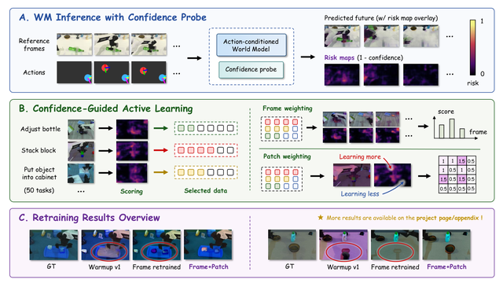
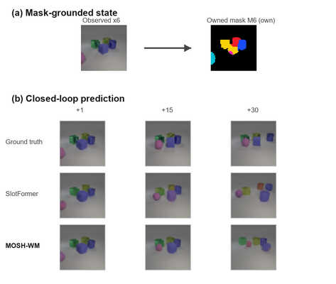
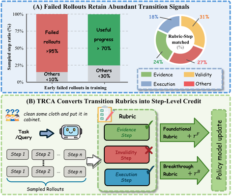
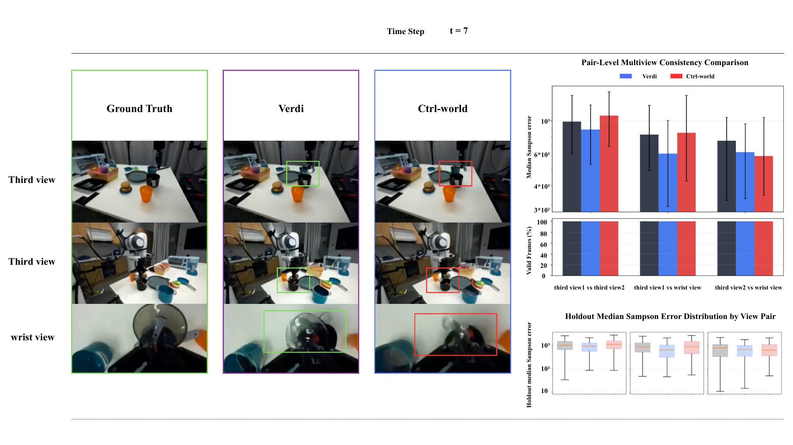
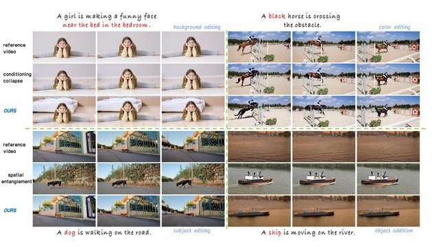
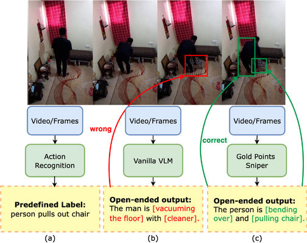
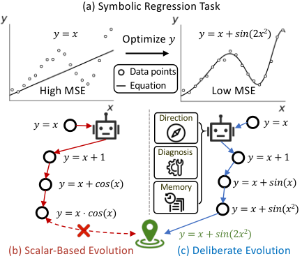
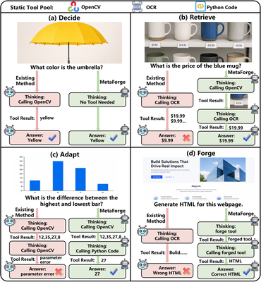
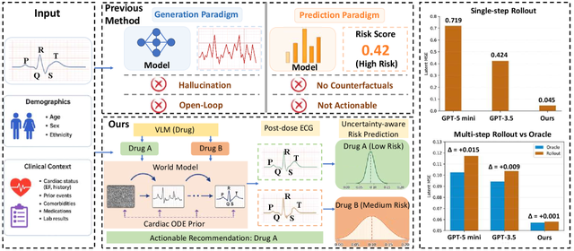
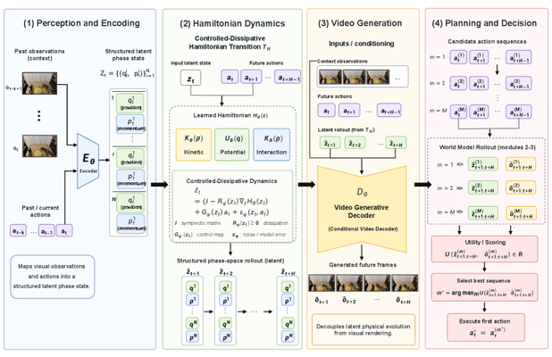
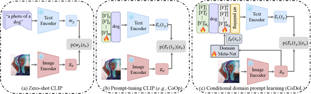
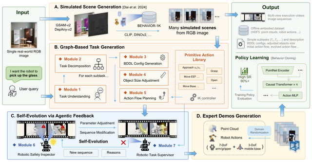
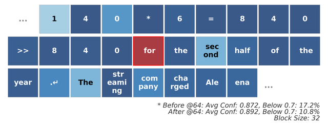
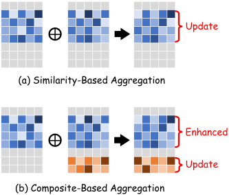
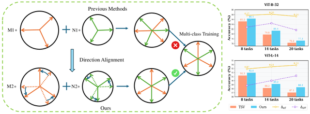
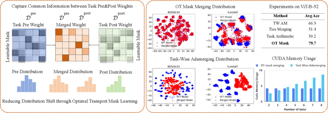
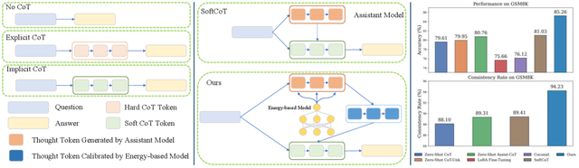
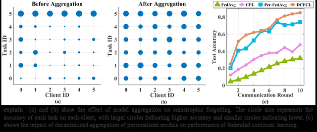
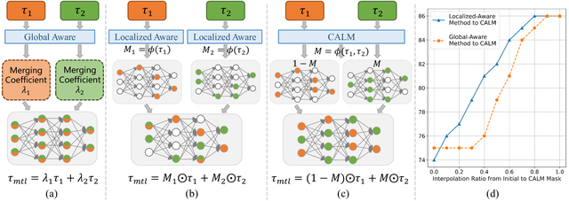
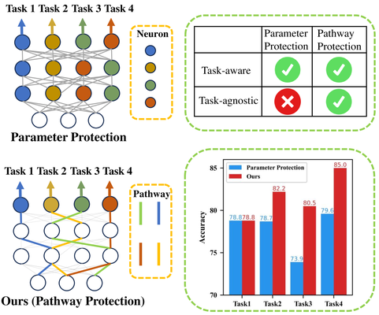
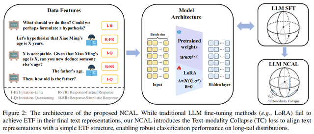
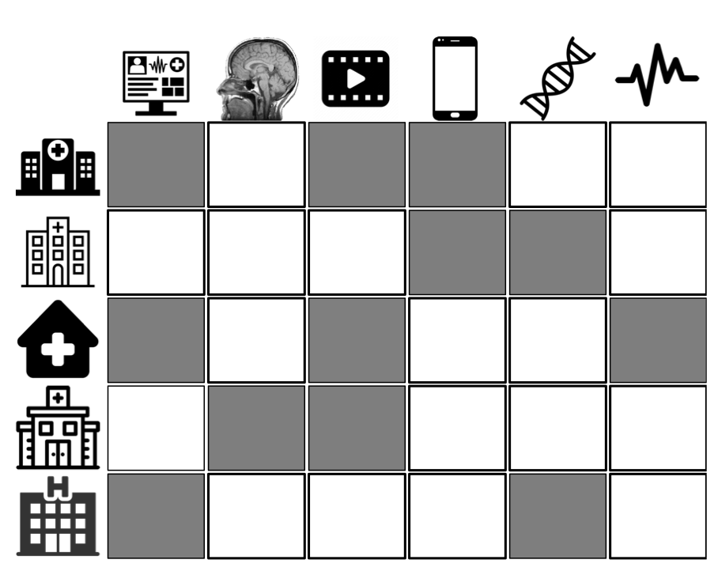
ICLR 2024 (Spotlight) / Paper
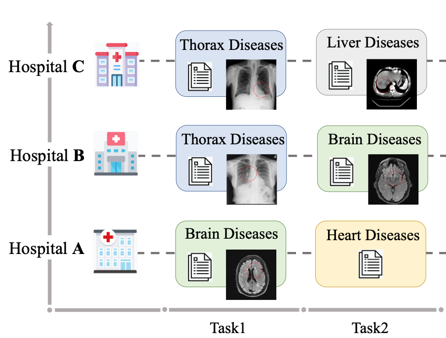
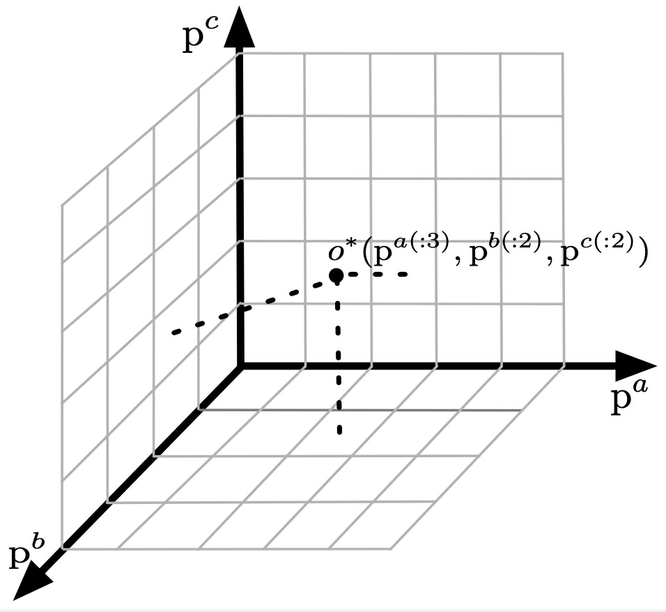